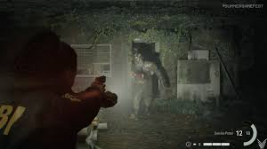

Alan Wake II es un videojuego de terror psicológico y acción desarrollado por Remedy Entertainment y publicado por Epic Games Publishing. Es la secuela del exitoso Alan Wake, lanzado en 2010. El juego se lanzó en octubre de 2023 y está disponible para PlayStation 5, Xbox Series X/S y PC. Alan Wake II se considera una expansión de la historia del primer juego, pero también se introduce como un título completamente nuevo que lleva la narrativa y la jugabilidad a nuevas alturas.
¿De qué trata Alan Wake II?
Alan Wake II sigue la historia del escritor de novelas de terror Alan Wake, quien, después de los eventos del primer juego, se encuentra atrapado en una dimensión oscura y aterradora conocida como el "Dark Place" (Lugar Oscuro). En esta secuela, los jugadores controlan a Alan Wake, pero también toman el control de Saga Anderson, una agente del FBI que investiga una serie de misteriosos asesinatos en Bright Falls, la misma ciudad donde ocurren los eventos del primer juego.
La historia se desarrolla a través de una narrativa compleja, llena de giros y elementos de terror psicológico. En Alan Wake II, los jugadores no solo deben desentrañar los misterios detrás de los asesinatos y la desaparición de Alan, sino también enfrentarse a entidades oscuras y luchar por sobrevivir en un mundo que juega con la realidad y la mente humana.
